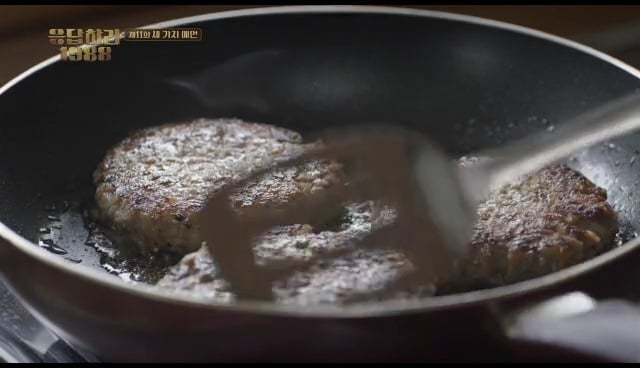
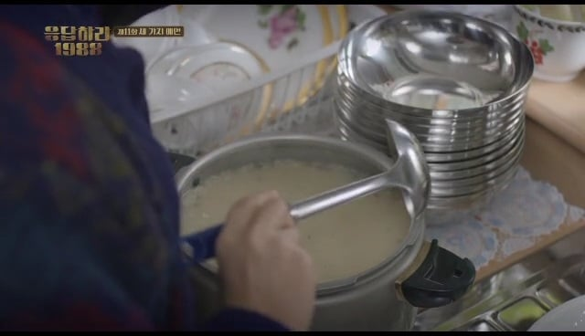
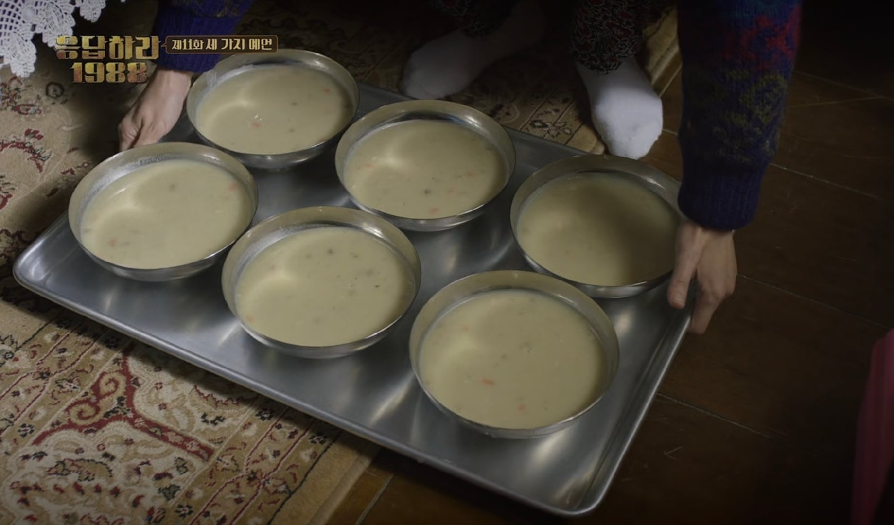
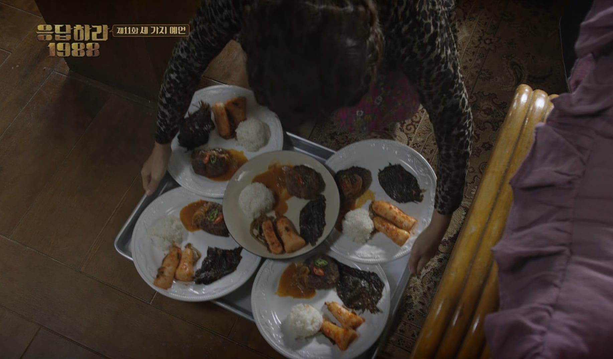
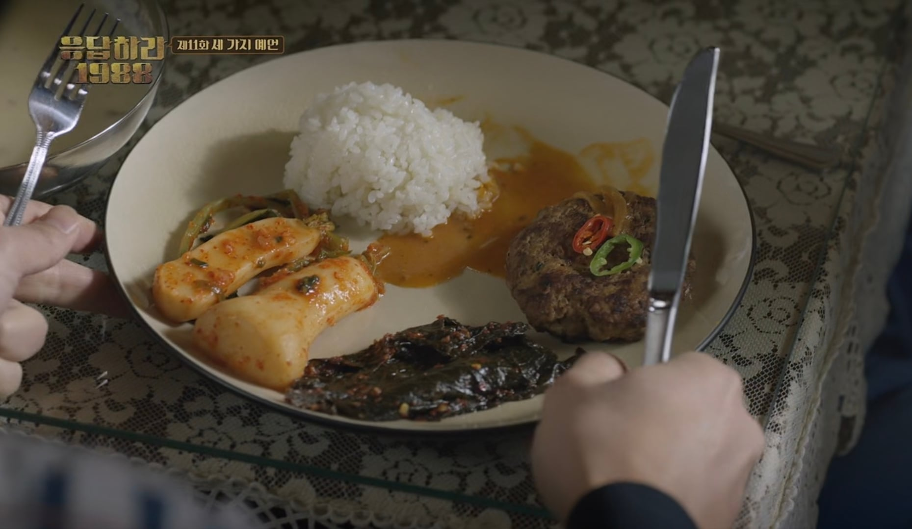

여기까지는 문제가 없는거 같은데...

냉면사발에 담긴 대용량 수프


총각김치 + 깻잎 장아찌 + 함박스테이크에 고추 데코...
진짜 퓨전식임 ㅅㅂㅋㅋㅋㅋㅋㅋㅋㅋㅋ


여기까지는 문제가 없는거 같은데...

냉면사발에 담긴 대용량 수프


총각김치 + 깻잎 장아찌 + 함박스테이크에 고추 데코...
진짜 퓨전식임 ㅅㅂㅋㅋㅋㅋㅋㅋㅋㅋㅋ
반찬은 따로 담아줘
쳐직이네
개맛도리일듯
총각김취
경양식집 스프는 적긴 해 ㅋㅋㅋ
떡갈비라고 생각하자
헬레니즘 철학이 느껴지네요
깻잎아니야? 명이나물이라고?
수정완료했습니다
함박스테이크 한장 추가요
계란후라이도 없네 저게 무슨....
근본 맛도리 정식이지
개맛있겠다
좋네요 구성
여기 떡갈비 추가요
극혐이네
알타리 맛잘알 인정
스프에 밥말아먹고 싶당
김치국물인가했는데 쏘스네 저건 어케 만들었으려나?ㅋㅋㅋㅋㅋㅋ
케찹하고 마요네즈랑 간장이랑 막 이래 이래 비비가
침고인다 ㅅㅂ ㅋㅋ
소스가 좀 적네잉
의외로 괜찮은 조합
목욕을 해도 2박 3일은 하겠는데요
명이나물이 진짜 밑반찬류 고트더라
고기나 돈까스집에서 이거 나오면 1.5배는 더 먹게됨
맛잘알 라여사
솔직히 맛나보임 ㅋㅋㅋㅋㅋㅋㅋㅋㅋㅋㅋ
다 먹고 밥한끼 잘먹었다 생각들듯
소스만 좀 더주면 김치가 킥임
든든하고 좋겠다 ㅋㅋㅋㅋ
이거 빨리 음식달라할때 라미란 알았어!!!!! 소리치는게 ㅈㄴ웃김 ㅋㅋㅋ
개존맛
와우 환장하겠네... 당장 한그릇 주시오!!!!
근데 맛이 보장된다는거임
스프 개조아
그냥 떡갈비 됨 ㅋㅋㅋㅋ
이게 맞지 ㄹㅇ
맛잘알
자~~ 일단 사픈가 스픈가 이거부터 뭅시다!
한국정식 1국 3찬 ㅋㅋㅋㅋ
그래서 안먹을거야?